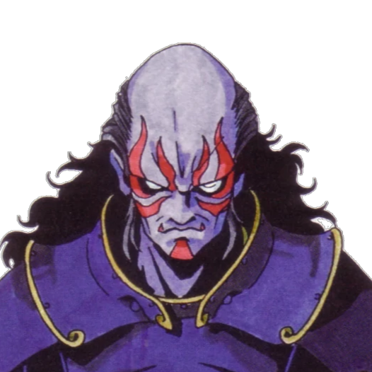

DDN NET
DDN NET
|  | Affinities | ||||||
|---|---|---|---|---|---|---|---|
| Phys | Ice | Fire | Force | Elec | Dark | Light | |
| Null | - | - | - | - | Null | Null | |
| Base Stats | |
| Level | 61 |
| Str | 40 |
| Mag | 2 |
| Vit | 28 |
| Agi | 4 |
| Luc | 20 |
| Skills | |
| Innate Skills |
|
| Learnable Skills |
|
Masakado is based on the Legendary General of the same name. Here is some background provided by the wiki.
Taira no Masakado. Before being known as the Guardian Deities of Kanto, Masakado was a samurai of great status that conquered the Kanto region in the mid-Heian period Masakado declared himself emperor of Japan after achieving this feat. However, it was short lived as he would soon fall to Taira Sadamori and Fujiwara Hidesato. After Masakado had passed, he would be enshrined in order to supress his spirit. Thus leading to his deity status.-Megami Tensei WikiAs stated by the wiki, he's pretty cool. Even if shortlived. He comes close to the top for us at Rank 2!